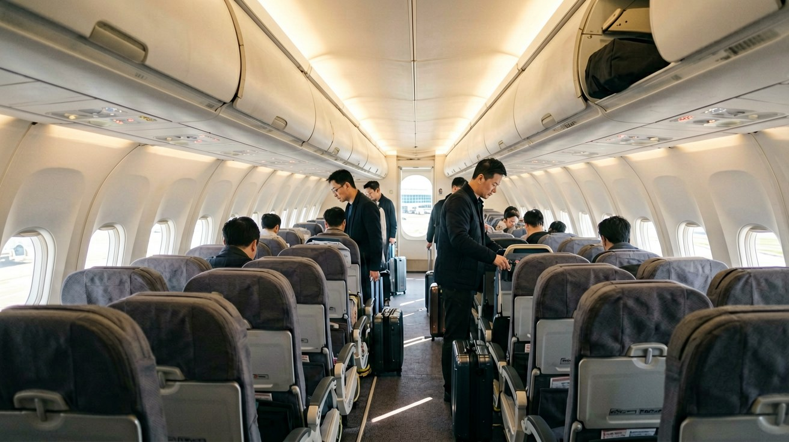
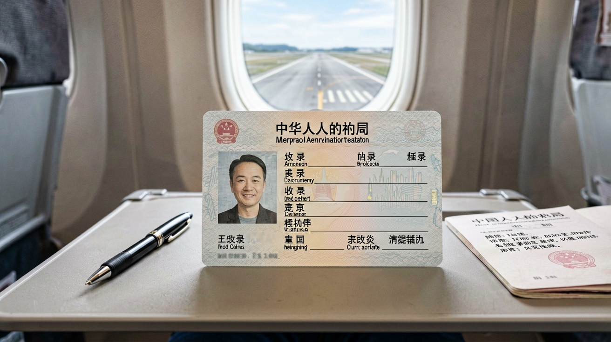
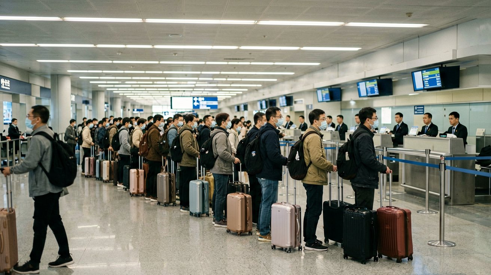
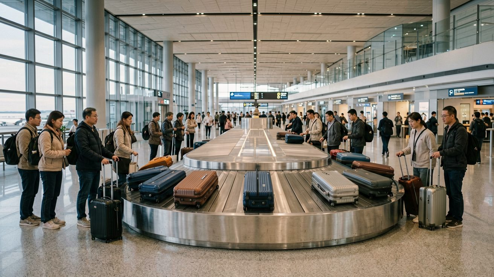
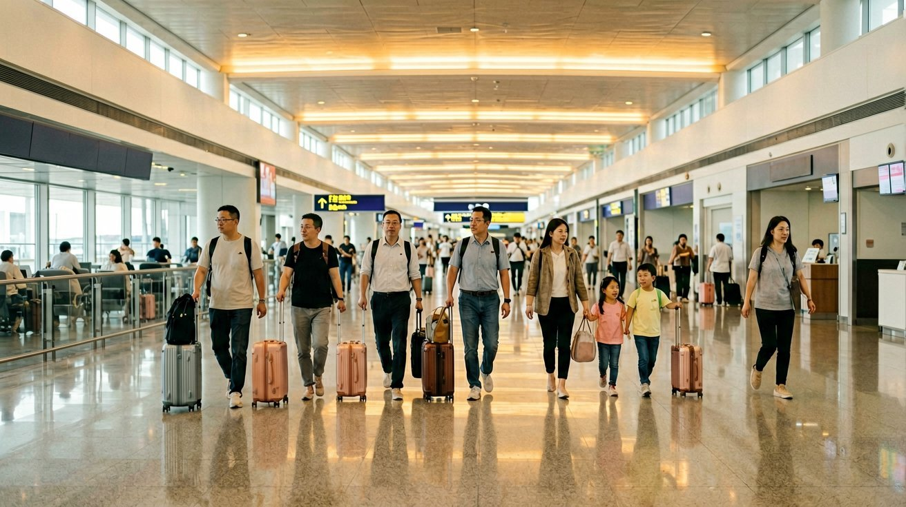

Last updated: June 2026.
The plane touches down. The seatbelt sign goes off. You grab your bag from the overhead bin and step into the jet bridge — and you are in China. The next 60 to 90 minutes are a sequence of steps that determine whether your trip starts smoothly or in confusion. This guide walks you through each one in the exact order you will encounter them, from the arrival card to your first ride into the city.

Before you reach immigration, you need to complete a China Arrival Card. On most international flights to China, flight attendants distribute these cards about an hour before landing. If they do not, or if you miss the distribution, stacks of blank cards are available on desks just before the immigration hall.
The card asks for: your full name as it appears in your passport, passport number, nationality, flight number, visa number (found on your visa sticker), intended address in China (your first hotel name and address is sufficient), and contact information. The card is bilingual — Chinese and English. Fill it out in English using block capital letters. Keep the arrival card with your passport — you will hand both to the immigration officer together. A pen in your carry-on saves you from hunting for one at the counters.

Follow the signs marked "入境 / Immigration" or "Arrivals." You will enter a large hall with multiple counters. Look specifically for lanes marked "Foreign Passports" or identified with a globe icon. Do not join the lanes marked "Chinese Citizens" — those are for residents and use automated gates that will not accept your passport.
At the counter, the officer will take your passport and arrival card. They will scan your passport, verify your visa, and take your photograph. Then comes the fingerprint scan. The officer will indicate — usually by pointing — which fingers to place on the reader. The standard procedure: place all four fingers of your right hand on the scanner, then your left hand, then both thumbs together. The scanner is a glass panel — press firmly and hold still until the officer signals you to stop. The entire process takes one to two minutes if there is no issue. If there is a queue, expect 5 to 20 minutes.
The officer may ask a routine question: "How long will you stay?" or "Where are you staying?" Answer concisely. This is not an interrogation — it is a standard verification. Once cleared, the officer stamps your passport and returns it along with a portion of the arrival card (keep this stub — you may need it when you leave China). Proceed to baggage claim.

After immigration, follow the signs to baggage claim. Overhead monitors display flight numbers and assigned carousels. Free luggage trolleys are available throughout the baggage claim area. If your luggage does not appear, find the airline's baggage service counter — most international airports in China have one near the carousels, and major airlines offer English-speaking staff.
Once you have your luggage, you pass through customs. China operates a dual-channel system: the green channel (nothing to declare) and the red channel (goods to declare). Most travellers use the green channel. As you walk through, customs officers may randomly select bags for X-ray scanning — this is routine and does not mean you have done anything wrong. When in doubt about a specific item, declare it. The rules for what requires declaration are posted on signs before the customs area.
Key restricted items: fresh fruit, vegetables, meat, and dairy products are prohibited. Cash over 20,000 RMB (or foreign currency equivalent to over 5,000 USD) must be declared. Prescription medication should be in its original packaging, and a doctor's note is recommended. One litre of alcohol and 400 cigarettes are duty-free. If you are carrying items for personal use — a laptop, a camera, a reasonable amount of personal clothing — you do not need to declare them.

You have cleared customs and are in the arrivals hall. Before you do anything else, get online. You need internet access to call a ride, check your hotel address, and message anyone who is expecting you.
Airport Wi-Fi is the fastest option. Most major Chinese airports offer free Wi-Fi in the arrivals hall. Connect to the network — usually named after the airport, such as "Airport-Free-WiFi" — and you will be prompted to enter a phone number to receive a verification code via SMS. If your foreign SIM has international roaming enabled, you can receive this SMS and connect within a minute. If it does not, look for a Wi-Fi kiosk machine that prints a login ticket after scanning your passport — these are available at Beijing Capital, Shanghai Pudong, and Guangzhou Baiyun airports.
SIM card counters are located in the arrivals hall. China Mobile, China Unicom, and China Telecom all have service desks. Bring your passport — it is required by law for SIM registration. A tourist data plan with 10 to 20 GB of data valid for 7 to 30 days costs approximately 100 to 200 RMB. The staff will insert and activate the SIM for you. This option gives you a Chinese phone number, which is useful for receiving verification codes from local services later in your trip.
eSIM is the simplest option if your phone supports it. Purchase and activate an eSIM before departure — Airalo, Holafly, and Nomad all offer China data plans. You arrive with connectivity already working, no SIM swap required. The trade-off is that eSIMs are data-only (no Chinese phone number) and slightly more expensive per gigabyte than a local SIM.
Whatever option you choose, test your connection before leaving the airport. Open a website, send a message, confirm that your maps app loads. Fixing connectivity issues from your hotel is far harder than fixing them at an airport service desk.

You are through immigration, you have your luggage, and you are online. Now you need to get from the airport to your hotel. Chinese airports offer four main options.
Ride-hailing (Didi). Open the Didi app (or the Didi mini-program inside Alipay), set your destination to your hotel address in Chinese, and confirm the pickup point. Most airports have designated ride-hailing pickup zones — the app will show you which floor and gate. Follow the app's directions. The fare from major airports to the city centre ranges from 100 to 250 RMB depending on the distance.
Airport metro. Beijing Capital Airport, Shanghai Pudong, and Guangzhou Baiyun all have metro lines connecting directly to the city. The metro is the cheapest option — typically 25 to 50 RMB — but it is not ideal with large luggage in rush hour. Tickets can be purchased from bilingual machines at the station entrance; Alipay and WeChat Pay are accepted.
Airport shuttle bus. These buses run fixed routes to major city centre locations and cost 20 to 40 RMB. The bus stops, schedules, and route maps are posted in the arrivals hall in both Chinese and English. Tickets are purchased from a booth near the bus stop. Shuttle buses are comfortable and reliable but slower than the metro or a taxi.
Official airport taxi. Follow the signs to the official taxi queue. Do not accept rides from drivers who approach you inside the terminal — these are unlicensed and will overcharge you. At the official queue, an attendant will direct you to the next available taxi. Show the driver your hotel address in Chinese and confirm they will use the meter. Fares are comparable to Didi, and payment can be made through Alipay, WeChat Pay, or cash.
By the time the car pulls up to your hotel, roughly 90 minutes have passed since you stepped off the plane. You are in China, connected, and checked in. The trip begins.
This article is based on airport procedures and regulations as of June 2026.
Sources
Airport procedures and service availability may vary between airports and over time. Confirm current information at your arrival airport.